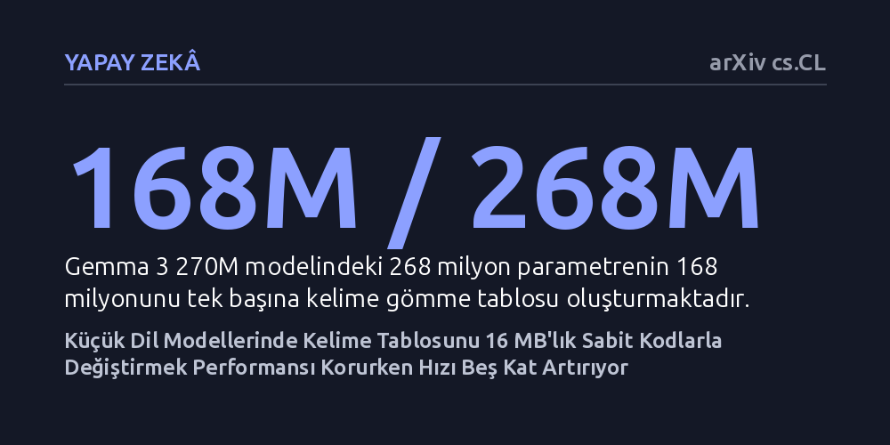

YAPAY-ZEKA · arXiv cs.CL · 2026-10-20
Araştırmacılar, küçük dil modellerinde parametrelerin büyük kısmını kaplayan kelime gömme tablosunun yerine 16 megabaytlık dondurulmuş ikili kodlar koyarak model başarımını test etti. Dondurulmuş tablonun temel testlerde performansı korurken model boyutunu 46 megabayta düşürdüğü ve işlemcide beş kat daha hızlı çalıştığı görüldü.
Milyonlarca parametreye sahip devasa kelime tablolarının küçük modellerde vazgeçilmez olmadığını, çok daha az kaynak tüketen sabit kodlarla da akıllı telefon ve dizüstü bilgisayarlarda yüksek hızda yapay zeka çalıştırılabileceğini gösteriyor.

Büyük dil modellerini günlük cihazlarımıza sığdırmaya çalıştığımızda en büyük engellerden biri dosya boyutu ve bellek ihtiyacıdır. Bir dil modeli küçüldükçe, dilin tüm kelimelerini sayılara döken "kelime gömme tablosu" toplam ağırlığın içinde orantısız bir yer kaplamaya başlar. Örneğin 268 milyon parametreli Gemma 3 270M modelinde, bu tablo tek başına 168 milyon parametre tutar. Modelin mantık yürüten gövdesi küçülse bile, kelime dağarcığı sabit kaldığı için model dosyasının neredeyse üçte ikisi yalnızca bir kelime sözlüğünden ibaret kalır.
Üstelik modelleri sıkıştırmak için kullanılan nicemleme yöntemleri, genellikle bu gömme tablosunu 16-bit hassasiyetinde el değmeden bırakır. Sonuç olarak, modelin hesaplama yapan katmanları ne kadar sıkıştırılırsa sıkıştırılsın, dosyanın en hantal parçası yine kelime tablosu olur. Bu durum araştırmacıyı temel bir soruya yöneltti: Acaba küçük bir modele ciddi bir bellek yükü bindiren bu eğitilebilir kelime tablosu gerçekten ödediğimiz maliyete değiyor mu?
Çalışmada, her kelime için milyonlarca serbest parametre eğitmek yerine tamamen sabit bir yöntem denendi. Önceden eğitilmiş bir gömme tablosundan temel bileşen izdüşümü ve işaret ikilileştirmesi teknikleri kullanılarak 512-bitlik kodlar türetildi. Bu işlem sonucunda hafızada yalnızca 16 megabayt yer kaplayan ve eğitim sırasında hiçbir parametresi güncellenmeyen dondurulmuş bir kelime tablosu oluşturuldu.
Araştırmacı, Gemma 3 270M ile aynı gövde mimarisine sahip iki modeli sıfırdan 2,05 milyar tokenlik metin verisi üzerinde eğitti. Modellerden birinde klasik eğitilebilir kelime tablosu, diğerinde ise 16 megabaytlık dondurulmuş ikili kod tablosu kullanıldı. Ardından modeller LAMBADA, HellaSwag, PIQA ve ARC-Easy gibi standart yapay zeka kıyaslama testlerinde doğrudan karşılaştırıldı. Ayrıca model gövdesi BitNet b1.58 adı verilen üçlü ağırlık sistemine aktarılarak sıradan bir dizüstü bilgisayar işlemcisinde hız ve bellek performansı ölçüldü.
Elde edilen sonuçlar, klasik eğitilebilir tablonun 2,6 kat daha fazla eğitilebilir parametre getirmesine karşılık doğrulama kaybında yalnızca 0,20 natlık mütevazı bir avantaj sağladığını ortaya koydu. Dahası; LAMBADA, HellaSwag ve PIQA gibi metin tamamlama ve akıl yürütme testlerinde dondurulmuş tabloya sahip model klasik modeli ya geride bıraktı ya da başa baş bir başarım yakaladı; yalnızca ARC-Easy testinde klasik model öne geçti.
Asıl çarpıcı fark verimlilik ve esneklik tarafında kaydedildi. Model, üçlü ağırlık gövdesiyle birleştirildiğinde toplam dosya boyutu 46 megabayta kadar indi ve bir dizüstü bilgisayar işlemcisinde sadece 62 megabayt bellek harcayarak saniyede 615 ila 740 kelime parçası üretti. Bu değer, standart 8-bitlik modele göre yedi kat daha az bellek kullanımı ve beş ila altı kat hız artışı anlamına geliyor. Ayrıca dondurulmuş tablo nadir kelimelerde daha başarılı oldu ve eğitim sonrasında sisteme 10.000 yeni kelime eklendiğinde sadece yüzde 3 başarım kaybederken, klasik tablonun başarımı yüzde 43 oranında çöktü.
Bu bulgular, küçük dil modellerinin mimari tasarımında ezber bozan bir bakış açısı sunuyor. Uç cihazlarda, akıllı saatlerde veya internet bağlantısı olmayan yerel sistemlerde çalışan küçük modeller için kelime tablolarının kapladığı alan en kritik darboğazlardan biriydi. Dondurulmuş ikili kodların kullanılması, performanstan kayda değer bir ödün vermeden modellerin doğrudan cihaz belleğine rahatça sığabileceğini gösteriyor.
Bununla birlikte, çalışmanın henüz hakem denetiminden geçmemiş bir önbaskı olduğunu ve deneylerin görece küçük bir veri kümesinde yapıldığını göz önünde bulundurmak gerekir. Yine de yazarın tüm model ağırlıklarını, eğitim verilerini ve değerlendirme sonuçlarını kamuya açık şekilde paylaşması, bu yaklaşımın daha büyük modellerde ve farklı dillerde sınanması için şeffaf bir zemin hazırlıyor.